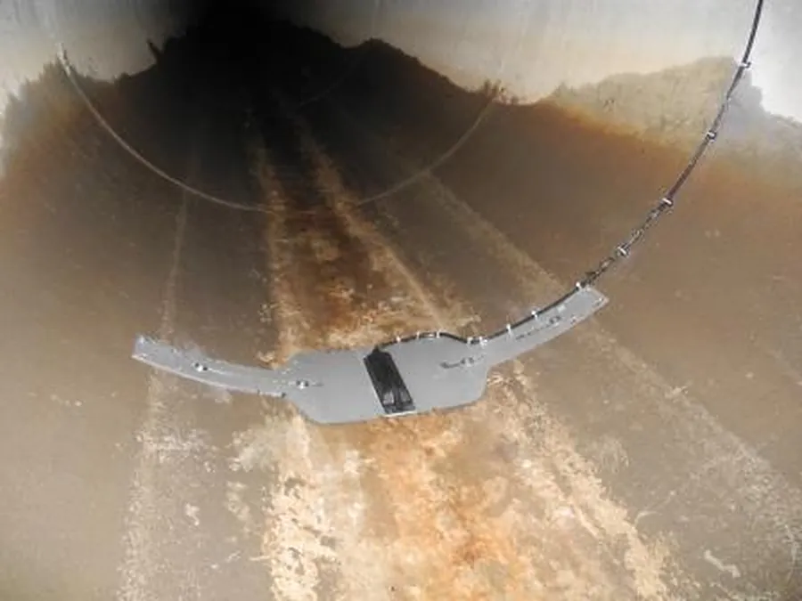

Débitmètres · Surface libre
BELUGADébitmètre Doppler hauteur-vitesse pour canaux ouverts
Capteur de vitesse Doppler immergé qui calcule lui-même le débit : il reçoit la hauteur d’eau de l’automate et renvoie le débit en RS485. Sans génie civil, sans déversoir ni venturi, sur effluents chargés.
- Vitesse
- − 2 à + 6 m/s
- Précision vitesse
- 1 %, selon conditions hydrauliques
- Débit
- ± 5 %, conduit rempli de 5 à 100 %
- Sorties
- RS485 Modbus ASCII · 4-20 mA
Idéal pour
- Réseaux d’assainissement
- Déversoirs d’orage
- Réseau pluvial
- Mises en charge
- Raccordement sur automate
LeasingDisponible à l’achat ou en leasing, par mensualités. Comment ça marche
Points forts
Un capteur Doppler numérique qui voit toute la distribution des vitesses de la section mouillée, et non une seule fenêtre.
- Débit calculé dans le capteurL’automate lui transmet la hauteur d’eau, le BELUGA renvoie la vitesse et le débit.
- Analyse spectraleOnde continue de 1 MHz : des milliers de fréquences analysées, sans zone morte.
- Dès 20 mm d’eauLa vitesse se mesure dès que le niveau atteint 20 mm.
- Fonctionne en refoulementVitesses mesurées de − 2 à + 6 m/s, mises en charge comprises.
- Niveau au choixUltrasons, radar, pression ou bulle à bulle : la mesure de hauteur reste libre.
- Toute forme de conduitCirculaire, ovoïde, rectangulaire, trapézoïdal, avec banquette ou asymétrique.
Principe de mesure
Le BELUGA émet un signal acoustique continu à 1 MHz. Les particules en suspension renvoient ce signal avec un décalage de fréquence proportionnel à leur vitesse : c’est l’effet Doppler.
Son processeur analyse le spectre complet des fréquences reçues. Il en déduit la distribution des vitesses dans la section mouillée, puis la vitesse moyenne. Avec la hauteur d’eau et la forme du conduit, il calcule la section mouillée et le débit.
- Mesure de vitesse de − 2 à + 6 m/s, résolution 0,001 m/s
- Température de l’eau mesurée par le capteur
- Paramétrage par ordinateur, tables hauteur / section générées à partir d’un relevé
Applications
Le BELUGA convient aux liquides chargés en particules, en poste fixe comme en campagne de mesure.
- Réseaux d’assainissementPoints d’autosurveillance, diagnostic permanent, collecteurs du DN 150 aux grands ouvrages.
- Déversoirs d’orage et pluvialMesure des surverses et des rejets, y compris en refoulement.
- Station d’épuration et rejetsComptage en entrée, en sortie et sur les eaux de rejet.
- IndustriesEffluents chargés en canal ou en conduit partiellement rempli.
Caractéristiques
Capteur seul. La mesure de niveau associée est choisie selon le site (capteurs disponibles sur demande).
| Méthode | Ultrasonique Doppler à onde continue, 1 MHz |
|---|---|
| Angle d’émission | 20° pour DN < 1000 · 45° pour DN 300 à 2500 |
| Gamme | − 2 à + 6 m/s |
| Précision | 1 %, selon le respect des conditions hydrauliques |
| Résolution | 0,001 m/s |
| Cycle de mesure | Environ 10 s |
| Hauteur d’eau minimale | 20 mm |
| Calcul du débit | Intégré, ± 5 % de la mesure, conduit rempli de 5 à 100 % |
|---|---|
| Communication | RS485, Modbus ASCII esclave |
| Sortie analogique | 4-20 mA de la vitesse, passive |
| Alimentation | 4 à 26 Vdc |
| Matériau | PVC haute résistance aux chocs |
| Dimensions | 190 × 48 × 28 mm, 0,26 kg |
| Protection | IP68 |
| Température | − 20 à 50 °C (stockage − 30 à 60 °C) |
| Câble | PUR, 10, 20 ou 30 m, jusqu’à 300 m sur demande |
Fourniture
- Anneaux élastiques inox 316 du DN 150 au DN 500 (8 tailles)
- Bandeaux inox 316 à visser du DN 500 au DN 2000 et ovoïdes
- Plaquette de fixation universelle en fond de conduit
- Rehausseur pour les très faibles débits
- Transmetteur avec afficheur et enregistreur portable en option
Téléchargements
Questions fréquentes
Les questions que nous posent le plus souvent les exploitants et les bureaux d’études.
Le BELUGA mesure-t-il la hauteur d’eau ?
Non, il mesure la vitesse. La hauteur vient d’un capteur séparé (ultrasons, radar, pression ou bulle à bulle) relié à l’automate, qui la transmet au BELUGA en RS485 pour le calcul du débit. Le BELUGA A/V intègre, lui, sa propre mesure de niveau.
Peut-on le raccorder sur un enregistreur autonome ?
Oui, en 4-20 mA de vitesse : l’enregistreur l’alimente par cycles (temps de chauffe 10 s, 100 mA sous 12 V) et enregistre hauteur et vitesse.
À partir de quelle hauteur d’eau mesure-t-il ?
La vitesse est mesurée dès 20 mm d’eau. Un rehausseur permet de mesurer les très faibles débits.
Le BELUGA convient-il aux conduits mis en charge ?
Oui : il mesure en refoulement et reste immergé. Il est souvent associé à un radar sans contact pour prendre le relais quand le collecteur se met en charge.